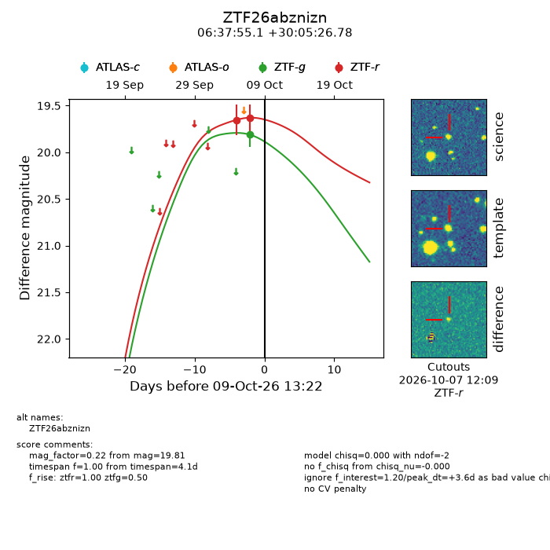
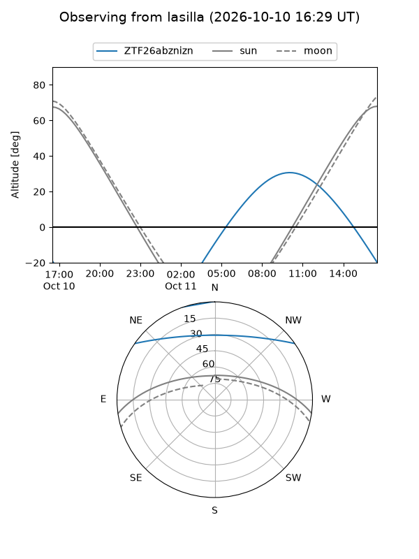
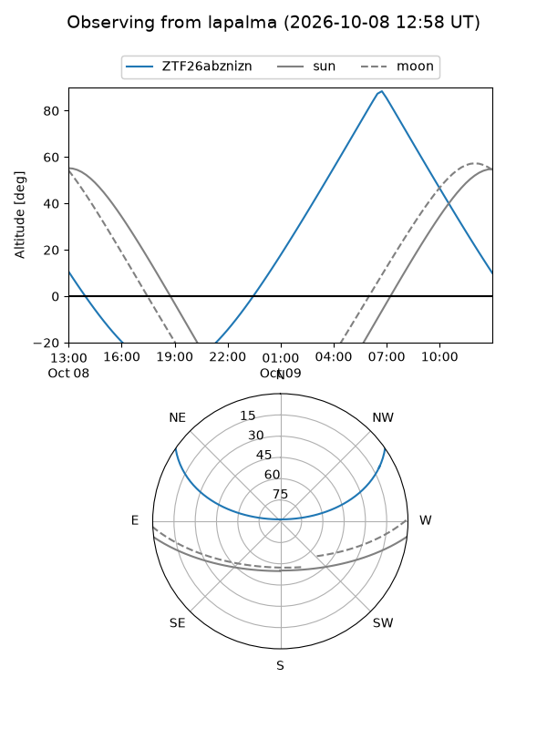
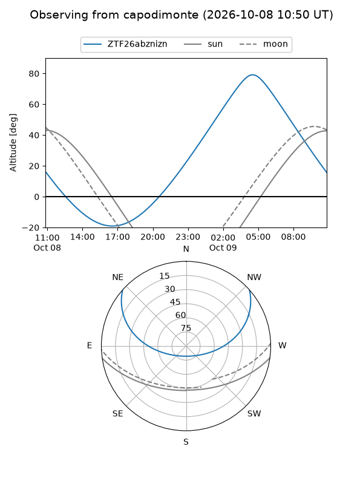
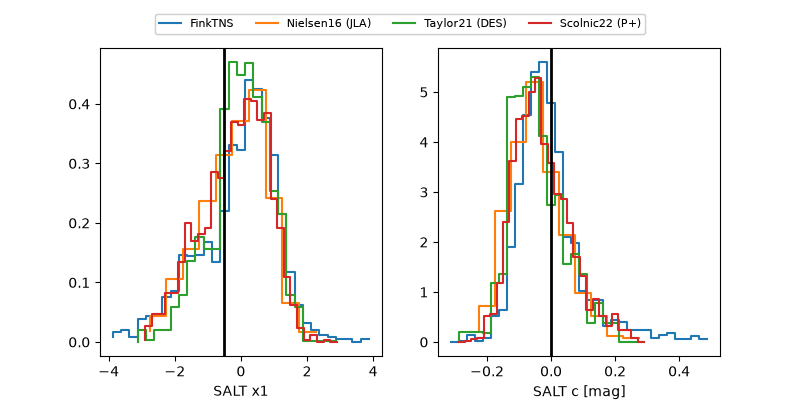

ZTF26abznizn
Target ZTF26abznizn at 2026-10-09 13:25
Aliases and brokers:
FINK-ZTF: ztf.fink-portal.org/ZTF26abznizn
Lasair-ZTF: lasair-ztf.lsst.ac.uk/objects/ZTF26abznizn
ALeRCE-ZTF: alerce.online/object/ZTF26abznizn
Direct TNS query: direct search
alt names
ZTF26abznizn (ztf,fink_ztf)
Coordinates:
equatorial (ra, dec) = 99.4795,+30.09077
equatorial (HMS+DMS) = 06:37:55.08,+30:05:26.78
galactic (l, b) = (184.4058,+10.55721)
Flags:
peak dt: +3.6
Photometry:
last ztfg=19.81, ztfr=19.63
1 ztfg, 2 ztfr detections
Lightcurve

Visibility



Additional plots
